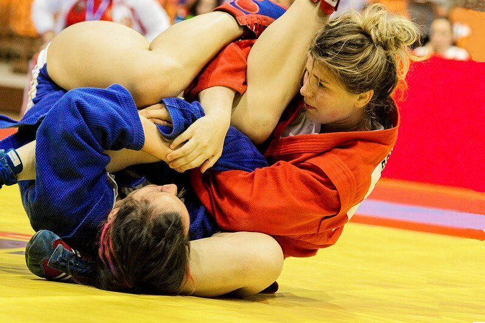
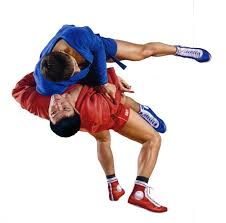

.

Дзюдо
(от японского дзю – гибкий, мягкий; до – путь) – вид единоборств, где наряду с бросками разрешены болевые (но только на руки) и удушающие приемы. Спортсмены занимаются в кимоно (длинная стеганная куртка с поясом и штаны), борются на специальных матах – татами. Для достижения победы в поединке атакующий борец в стойке должен выполнить бросок соперника на татами на спину, а в положении лежа – болевой или удушающий прием, либо удержание (30 сек.). Сегодня, соревнования по дзюдо проходят в следующих весовых категориях: 60,66,73,81,90,100 и свыше 100 кг – это у мужчин, а до 48,52,63,70,78 и свыше 78 – у женщин. Также, проводятся специальные турниры, так сказать, в абсолютной категории, где свободно могут принимать участие спортсмены любого веса.
самбо
САМБО является аббревиатурой и расшифровывается как САМозащита Без Оружия. Таким образом, в самом названии заложен принцип самбо - самозащита, ведь самбо не учит драться, а только защищаться. Это очень правильно с психологической точки зрения, потому как обученный в правильных традициях этого единоборства человек развивает в себе физические навыки и реализует потребность в умении себя защитить, а не нападать. Основатели этого вида спорта по кусочкам собирали его, заимствуя различные приемы, техники и стили у других видов единоборств, таких как джиу-джитсу, бокс, дзюдо, сумо, и других интернациональных видов борьбы. Самбо тренирует волю и выдержку, закаляет характер. Это очень хорошая физическая подготовка, не являющаяся мучительной или болезненной (как, например, в различных видах боя).
